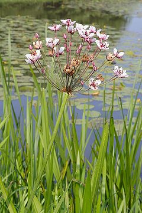
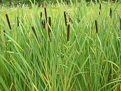
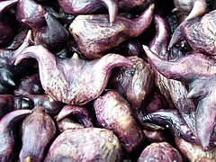
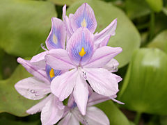

Водни растения.
Същност
Водните растения са растения, които са се адаптирали да живеят във водна среда. Тези растения трябва да имат специфична адаптация за да могат да живеят изцяло потопени във вода или на водната повърхност.
Водните растения могат да растат само във вода или в почва, която е в постоянен досег с вода. Водните васкуларни растения могат да бъдат папратовидни или покритосеменни (от различни фамилии, включително сред едносемеделните и двусемеделните).

Сенников водолюб
Сенниковият водолюб (Butomus umbellatus) е вид покритосеменни растения, единственият в семейство Водолюбови (Butomaceae).
Разпространен е в умерения пояс на Евразия, включително в България, като обитава блатата в близост до брега.
Папур
Папур (Typha) е род многогодишни коренищни растения от семейство папурови. Съществуват около 18 вида папур, като в България има 5 вида.
Растат по застояли и бавнотечащи води, предимно в блата, по крайбрежни ивици на язовири, езера и реки. Коренищата са богати на скорбяла.
Воден орех
Водният орех (на латински: Trápa nátans), известен още като дяволски орех, джулюн, рогатка е едногодишно влаголюбиво тревисто растение от семейство Нарови (Lythraceae).
Видът се среща и в България. Плодовете му се използват за храна на хора и животни.
Воден хиацинт
Листата са събрани в розетка. В основата си имат издута част с пореста тъкан, благодарение на която растението остава на повърхността на водата. Корените достигат до половин метър дължина и са изцяло под водата. Цветът наподобява на зюмбюл. На цвят е розов, син или виолетов. Растението се размножава бързо и за кратко време покрива водната повърхност. Това затруднява придвижването дори на плавателни съдове. Поради плътния слой покрит от растенията се влошава кислородния режим във водоема и с това довеждат до намаляване на останалите обитатели.
Растението има способност да поема и акумулира инсектициди, феноли, фосфати, кадмий, никел и сребро. Често се използва за декоративно оформление на аквариумите.
Симо Георгиев Александров, 12в, 22/01/2020